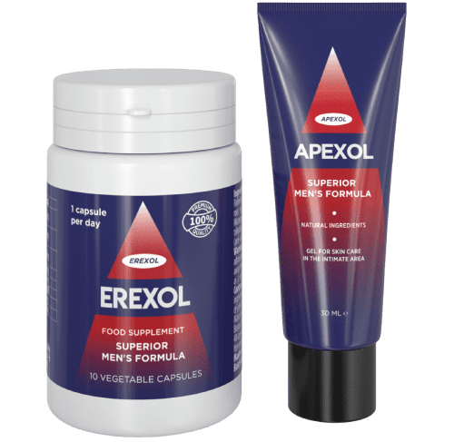

8 italiani su 10 hanno problemi di potenza!
Siamo riusciti a intervistare un eccezionale medico e scienziato, il dottore in scienze mediche Bruno Rinaldi. Il dottor Rinaldi ci ha spiegato come è possibile avere un'erezione duratura e stabile a qualsiasi età, prolungare il rapporto sessuale fino a diverse ore, ingrandire il pene ed avere un orgasmo fantastico!
- Salve, dottore! Ci parli di sé.
Nel 2005 mi sono laureato in Medicina e Chirurgia presso l'Università degli Studi di Milano, ho conseguito la laurea in medicina, in seguito ho intrapreso l’attività scientifica, ho insegnato all'Università di Bologna, esercitato in diversi ospedali, tra cui la clinica per la salute maschile di Roma. Mi sono specializzato all’estero, ho studiato e lavorato diversi anni in Svizzera e in Germania.
- Sappiamo che si è occupato molto del problema di prostatite e dell'impotenza sessuale. Le statistiche mondiali sono davvero spaventose. Ultimamente c'è la tendenza di dover affrontare la prostatite in età molto più giovane, anche gli uomini sotto i 40 anni spesso hanno a che fare con questa malattia. Come vanno le cose in Italia?
Sfortunatamente, non ho una prospettiva molto positiva da illustrarvi. In Italia la situazione è peggiorata negli ultimi cinque anni. 8 uomini su 10 hanno continuamente problemi di natura sessuale. Problemi comuni che includono calo di erezione, minzione frequente, diminuzione della libido, eiaculazione precoce, infiammazione cronica della ghiandola prostatica, ecc. L'età media dei miei pazienti è di 40-45 anni, mentre qualche anno fa i pazienti avevano 10-15 anni in più.
Durante il mio stage in Germania, ho incontrato abbastanza spesso pazienti anziani in età pensionabile che non avevano problemi nella sfera sessuale. In Italia invece è una cosa molto rara. La maggior parte degli uomini dopo i 60 anni ha perso completamente o parzialmente la potenza sessuale e questo fatto mi turba molto.
L'incapacità di fare sesso, litigi, i divorzi e le infedeltà non sono le cose peggiori a cui portano i problemi di erezione. La cosa più terribile è che nel 90% dei casi abbiamo a che fare con l'insorgenza di malattie che possono portare alle conseguenze anche letali. Spesso tali problemi indicano l'inizio di cambiamenti patologici nelle cellule della ghiandola prostatica e possono portare al cancro.
La diminuzione dei livelli di testosterone inizia nel corpo maschile dopo i 35 anni. Dopo aver raggiunto questa età, è importante aiutare il corpo a mantenere alto il livello dell'ormone sessuale per ridurre la probabilità di sviluppare un cancro e mantenere la potenza sessuale.
- Ci parlerebbe dei primi sintomi e di come non trascurare l'insorgenza dell'impotenza?
Dovreste preoccuparvi se compaiono sintomi come:
- Erezione debole, che scompare;
- Eiaculazione precoce;
- Mancanza di desiderio sessuale, libido debole;
- Minzione frequente;
- Dolore o fastidio all'inguine e al perineo;
- Irritabilità, insonnia, debolezza, diminuzione dell'attività.
Se almeno una volta al mese si notano tali sintomi, è necessario utilizzare prodotti speciali come . L'assunzione di questo prodotto vi permette di godere la vita sessuale sin da subito e vi salverà dai problemi in futuro...
Inoltre, bisogna fare attenzione se l'uomo supera l'età di 45 anni e se conduce uno stile di vita poco salutare. Stress, alcol, fumo, dieta malsana e uno stile di vita sedentario. Tenete d’occhio il testosterone: siete a rischio!
Un 'altra precauzione! L'uso eccessivo di stimolanti come il Viagra può accelerare l 'insorgenza di impotenza e influire negativamente sulla funzione cardiaca!
- Cos'è questo prodotto di cui Lei parla? Come funziona e perché lo raccomanda?
Si tratta di . Alcune delle capsule più efficaci per ripristinare la potenza sessuale e soprattutto per aumentare il livello di testosterone. Pertanto, la cura è molto sicura per l'organismo maschile. Si tratta di un preparato completamente naturale che a qualsiasi età aiuterà a ripristinare un'erezione stabile e proteggere il corpo da gravi patologie che possono essere causate dalla mancanza di testosterone.
È importante notare che l'effetto migliore si ottiene quando si combina il prodotto con il gel lubrificante . I due farmaci si completano e si rafforzano a vicenda.

È l’ ultima invenzione degli scienziati: un rimedio sicuro, e in termini di efficacia è molte volte superiore agli analoghi. inizia ad agire pochi minuti dopo l’assunzione e può essere utilizzato una volta prima del rapporto sessuale o un trattamento per ripristinare la potenza per lungo tempo e migliorare la produzione di ormoni sessuali.
- Ci potrebbe raccontare un po' di più? Qual è il segreto?
L’ efficacia delle capsule sta nella sua composizione molto potente, che include principi attivi naturali, inclusi afrodisiaci naturali e stimolanti della sessualità maschile.
Il preparato aiuta in diversi ambiti
- Migliora l’erezione Di conseguenza, un'erezione diventa persistente per molto tempo, non scompare durante l 'intero rapporto sessuale;
- Allunga la durata del rapporto sessuale. L'assunzione di aiuta a regolare la durata del rapporto e controllare l'eiaculazione. Ci si può divertire con la partner.
- Migliora la qualità dello sperma. Lo sperma diventa più grande e il numero di spermatozoi attivi aumenta.
- Orgasmo potente. Lo strumento promuove un potente orgasmo e nuovi piaceri derivati dal sesso.
- Provoca la secrezione di testosterone. Di conseguenza, il livello dell'ormone aumenta come anche la libido.
- Aumento delle dimensioni dal sistema urogenitale. Le sostanze naturali aiuteranno ad aumentare le dimensioni del pene di diversi centimetri stimolando la circolazione sanguigna nell’organo e il flusso sanguigno al pene.
- Protezione contro possibili malattie future. aiuta a ridurre al minimo il rischio di malattie genitali maschili e si prende cura della tua salute.
Il vantaggio principale di questo prodotto è che funziona sempre, anche nei casi più difficili e per i pazienti molto anziani. E' completamente naturale, ciò significa assenza di controindicazioni e totale sicurezza per la salute.
- Come si può acquistare? Sono molti gli uomini che ora vorranno usarlo.
In Italia sono riusciti a lanciare un programma statale. L'obiettivo del programma è dare a ogni persona l'opportunità di curare i problemi di potenza prima che si sviluppi in una forma più grave. Nell'ambito di questo programma il prezzo è molto conveniente. Affrettatevi ad approfittare dell'offerta!

Commenti
Francesco
Ho iniziato ad avere problemi con la potenza dopo un’infiammazione. Mia moglie era terribilmente arrabbiata, spesso litigavamo. Volevo migliorare il nostro rapporto e ho preso il Viagra. Ma poi ho iniziato ad avere problemi di cuore e pressione. Ho dovuto smettere. Poi ho iniziato a cercare informazioni su Internet e ho trovato . Mi è piaciuto che avesse una composizione naturale e l' ho ordinato.Lo prendo prima del sesso e mia moglie è al settimo cielo! Non avevo mai avuto un'erezione del genere nemmeno da giovane! Un ottimo strumento, lo consiglio a tutti! A proposito, insieme alle capsule di usa anche il gel . Vi consiglio di ordinare entrambi i prodotti per ottenere l'effetto migliore.
Alessandro
Grazie per aver parlato di questo preparato. Senza di lui, la mia famiglia sarebbe crollata. Mia moglie ha 20 anni meno di me e non posso darle lo stesso piacere di prima. Avevo paura si trovasse un amante. Un amico mi ha consigliato e i miei problemi si sono risolti! Ora è di pietra!
Andrea
Ho seguito un ciclo con il preparato, volevo ingrandire il pene e avere controllo durante il sesso. Dopo due mesi, il pene è aumentato di 2 cm! Ne sono molto felice! Ora posso fare l'amore con la mia ragazza per molto tempo e arrivare sempre all’orgasmo insieme!
Lorenzo
Ottimo preparato!Mi ha aiutato a diventare forte a 62 anni!
Mattia
Ho iniziato ad avere problemi - venivo molto velocemente, mia moglie era infelice. Su consiglio di un amico, ho provato . Ora tutti i problemi fanno parte del passato, ora scelgo io quando venire e duro ore!
Maria
Io ho comprato per mio marito.Ha iniziato ad avere problemi di erezione, e litigavamo per questo sempre.Era offeso e arrabbiato.Ho letto di questo rimedio su Internet e l 'ho dato a mio marito fingendo fossero vitamine. Il risultato è stato sorprendente! Possiamo restare a letto per ore! Poi gli ho confessato qual era il segreto. Ora assume a trattamento per mantenere l'effetto a lungo. Anche il gel funziona bene. L'effetto è fantastico!
Gabriele
Il prodotto mi è piaciuto molto! Ho 64 anni e non speravo in un miracolo! Ma di recente ho incontrato una donna, è giovane e vuole fare sesso! Abbiamo cercato una via d' uscita e l 'abbiamo trovata in ! Una capsula e posso fare sesso per diverse ore! Anche il lubrificante gel è super, con esso l'effetto è più forte e migliore. La mia donna è molto felice e dice che non ha bisogno dei giovani.
Leonardo
Come lo posso prendere ? Mi serve molto!
Giuseppe
‘È incredibile! Orgasmi come quelli con non li ho mai provati! Prendo una capsula e dopo 10 minuti ho una forte erezione! Ogni tanto uso anche un gel lubrificante (l'ho preso in aggiunta alle capsule per avere un effetto più intenso). E il gel aggiunge sensazioni e migliora l'effetto! Fantastica la compatibilità con l'alcol.
Giovanni
Ho cercato a lungo un rimedio naturale che possa essere usato anche con l'ipertensione. Il risultato mi piace molto! È duro come il ferro! E le dimensioni sono diventate più grandi… Super!
Luigi
Il mio amico tedesco mi ha parlato di questo rimedio! Dice che è molto popolare li. Gli ho chiesto di portarmelo. E ora si scopre che puoi acquistare da noi ad ottimo prezzo.
Antonio
Grazie dottore!! Questo è ciò di cui avevo bisogno!Hai appena salvato la mia famiglia!
Mario
Mia moglie ed io siamo nuovamente in luna di miele grazie a ! È incredibile sentirsi giovani e pieni di energia quando si hanno più di 50 anni! Sono molto grato ai creatori di questo meraviglioso prodotto! Anche il gel è ottimo, il suo effetto rafforza l'azione delle capsule. Vi consiglio di provare insieme ad .